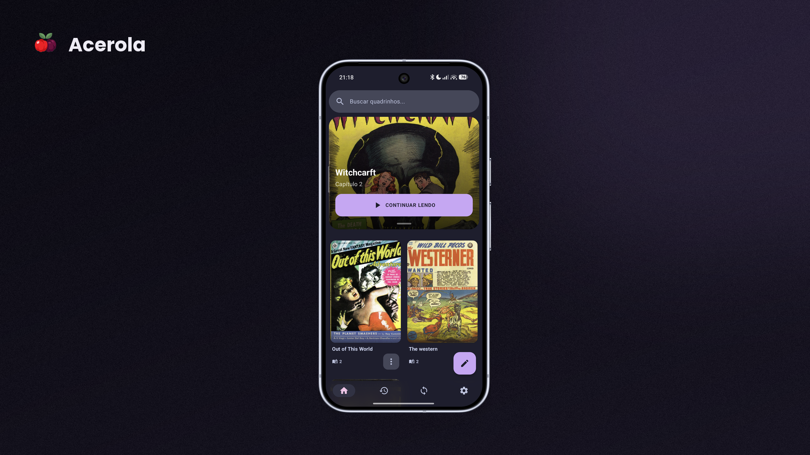
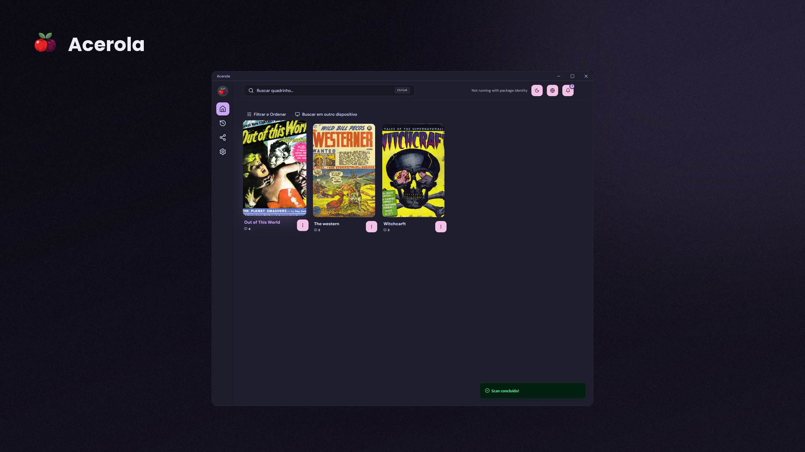
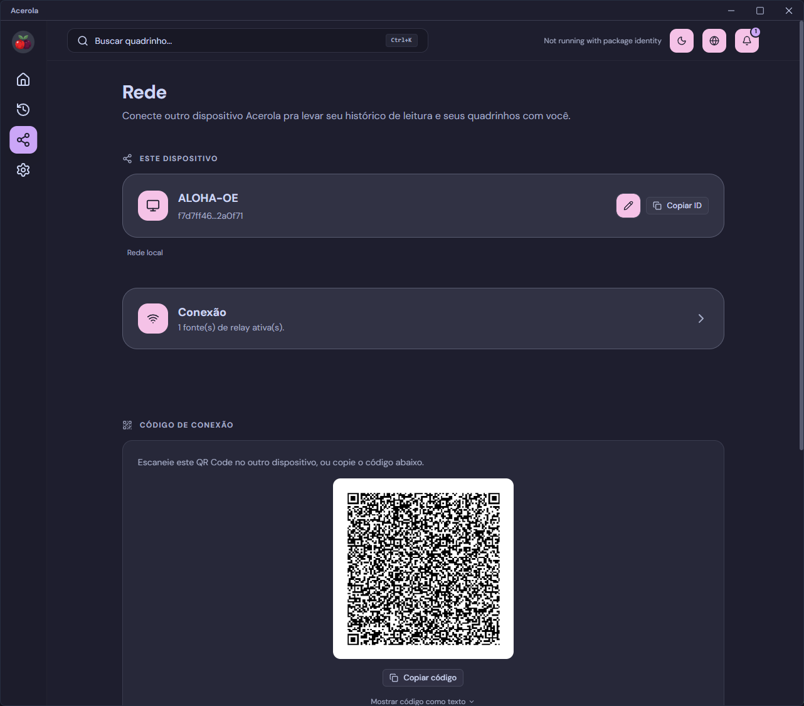
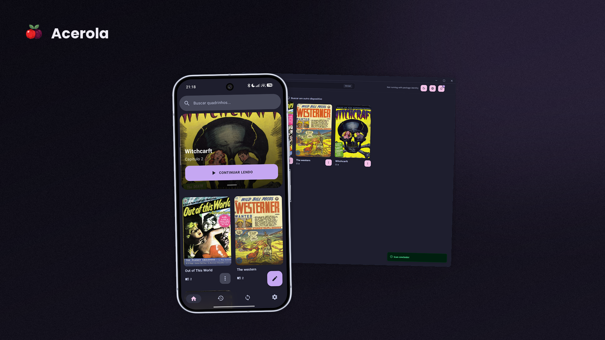

Acerola
No cloud. No account.
Same library. Every device.


01 — Install
Install on both devices.
02 — Pair via QR

Scan to pair.

From then on, it syncs automatically, device to device.
No cloud, no account
Direct P2P sync
Open source
Acerola
Open source. No cloud.